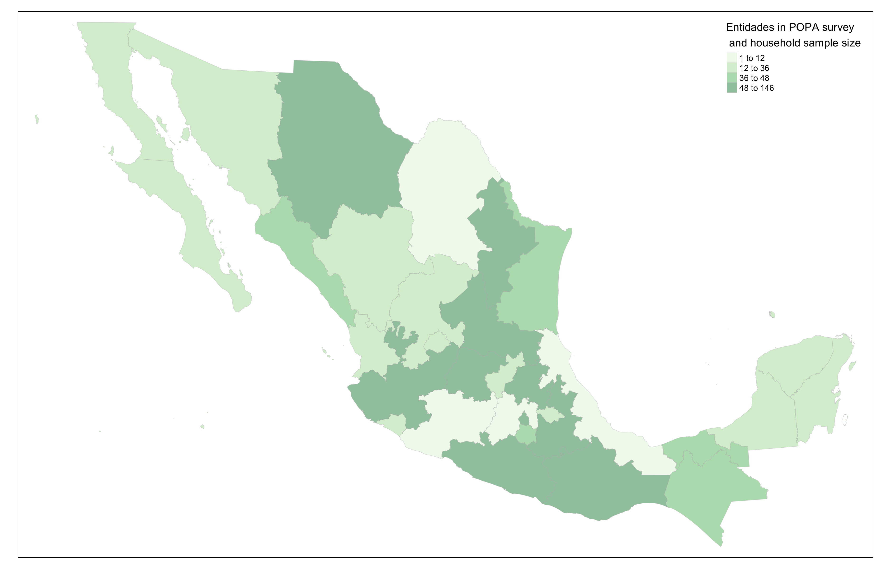
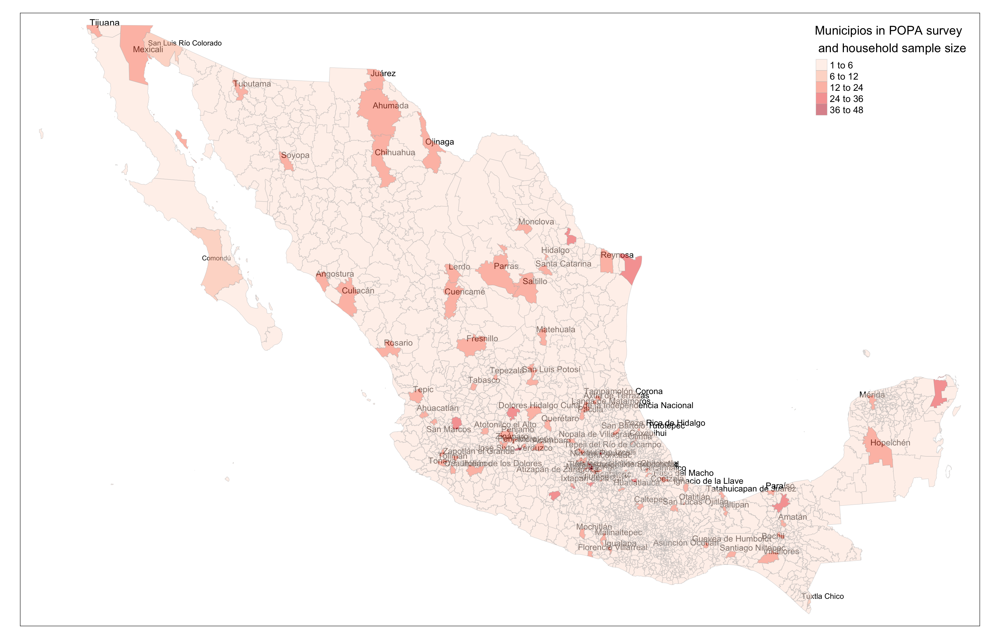

How we obtained the Sample WSS Operators Mexico and what it looks like
Sampling design
- In order to match our sample to official Mexico admin boundaries (as in Census 2010), I downloaded from INEGI the ID keys and shapefiles (polygons) for
- Entidad (32)
- Municipios (2546)
- Localidades URb( 4525 of 192,217 ) MULTiPOLYGON
- Localidades Rur (187719 of 192,217) points
- AGEB urb- 56195
- The sample for the survey is mutuated from the sampling design of LAPOP because the goal is to survey the WSSS providers in the same areas where LAPOP was interviewing households. LAPOP households interviews covered 1,563 IDs located in 260 clusters, found in 110 municipios.
LAPOP provided a file with geofences that indicate a circle containing each cluster in 2016 (might be slightly changed in 2018)
Based on those, we identified the (expected) clusters for POPA 2018 sample & matched each location with the pertinent WSS Supplier in the area. We arrived to a sample of 96 different suppliers.
This survey encompasses two main goals
- Survey of WSS suppliers
- Survey of small samples of househods served by the above suppliers (also a chance to validate the LAPOP hh survey in the same areas)
What follow is a preliminary analysis of the 2 respective samples.
(PHASE I) The Water & Sanitation Providers
THE UNIVERSE OF ORGANISMOS OPERADORES IN MEXICO
INEGI has identified a total of 2,688 “Organismos Operadores” (OO) in the “Censo de Captacion, Tratamiento y Suministro de Agua” conducted in 2014 and published in 2016 (INEGI 2016 ). Of all of these, some ~700 could be rightly defined as “Organismos Operadores”, i.e. entities specialized in the provision of the services of water and sanitation (regardless of their degree of autonomy in their decision making and financial management.
> The service providers *"organismo que presta el servicio de captaci<f3>n, tratamiento y suministro de agua"* in Mexico are extremely heterogeneous in nature and conditions. Here are some key information from the Economic Census
- JURIDICAL CATEGORY:
- 2401 (of 2668) are servicios del sector pblico
- 257 (of 2668) are asociacin civil
- 30 (of 2668) are sociedad mercantil con fines de lucro o sociedad cooperativa
In this project, the classification that we use is mostly derived from a Nota Tecnica prepared by some colleagues of the IADB, WSA division (See Riquelme and Martinez 2018, 1–3). This managed to retreive some basic information on 2,252 Prestadores.
- GEOGRAPHIC COVERAGE: according to INEGI, the OOs can present different coverage (INEGI 2016, 16)
- Only the cabecera municipal (1245 out of 2668)
- Cabecera Municipal + some other localidades (892 out of 2668)
- Whole Municipio (350 out of 2668)
- Intermunicipal
- Whole Entidad Federativa
- Rural
Otros (201 of 2668)
- EMPLOYED PERSONNEL:
- personal ocupado por sexo; 81.3% con trabajadores hombres y 18.7% mujeres
- obreros y tcnicos; 76,744 obreros y tcnicos (62.5%)/un total de 117 866 puestos de trabajo
- empleados y directivos;
* personal no remunerado 3,764 trabaja- dores no remunerados/un total de 117 866 puestos de trabajo * promedio de horas trabajadas * personal no dependiente de la razn social * remuneraciones pagadas * prestaciones sociales * pago al personal subcontratado.
- INGRESOS POR CONSUMO DE BIENES Y SERVICIOS:
- Suministro de agua 69.3%
- Derechos de conexin y alcantarillado 2.1%
- Ingresos por ejercicios anteriores 9.2%
- Otros Venta de agua tratada 7.6%
- Tomas de agua por tipo de usuario
- Toma domstica 92.1%
- Toma comercial 6.3 %
- Toma industrial 0.6 %
- Toma de servicios pblicos 1 %
- Distribucin porcentual de los ingresos segn la venta de agua potable por tipo de usuario
- Toma domstica 60.9 %
- Toma comercial 25.3 %
- Toma industrial 8.1 %
- Toma de servicios pblicos 5.7 %
THE ORGANISMOS OPERADORES IN OUR SAMPLE
- JURIDICAL CATEGORY (“TIPO”) refers to the juridical status of the agency: 654 are considered proper “PRESTADORES”, whereas 1,557 are not considered as proper utilities in the classification, respectively:
- 1,332 are No clasificado
- 245 are cases in which the municipalities that directly provide water and sanitation services
| No clasificado |
1332 |
59.15 |
59.15 |
| OPD paramunicipal |
594 |
26.38 |
85.52 |
| Servicio Centralizado del Municipio |
245 |
10.88 |
96.40 |
| OPD paraestatal |
59 |
2.62 |
99.02 |
| Concesionario privado |
10 |
0.44 |
99.47 |
| Organismo Desconcentrado del ayuntamiento |
7 |
0.31 |
99.78 |
| Organismo Desconcentrado de la entidad |
2 |
0.09 |
99.87 |
| Operador federal |
2 |
0.09 |
99.96 |
| Empresa publico-privada |
1 |
0.04 |
100.00 |
| Todos los tipos |
0 |
0.00 |
100.00 |
| Total |
2252 |
100.00 |
100.00 |
- “RANGO” refers to the size of the populaition served.
| No clasificado |
1332 |
59.15 |
59.15 |
| OPD paramunicipal |
594 |
26.38 |
85.52 |
| Servicio Centralizado del Municipio |
245 |
10.88 |
96.40 |
| OPD paraestatal |
59 |
2.62 |
99.02 |
| Concesionario privado |
10 |
0.44 |
99.47 |
| Organismo Desconcentrado del ayuntamiento |
7 |
0.31 |
99.78 |
| Organismo Desconcentrado de la entidad |
2 |
0.09 |
99.87 |
| Operador federal |
2 |
0.09 |
99.96 |
| Empresa publico-privada |
1 |
0.04 |
100.00 |
| Todos los tipos |
0 |
0.00 |
100.00 |
| Total |
2252 |
100.00 |
100.00 |
Which Entidades and Municipios
The ENTIDADES and MUNICIPIOS INCLUDING LAPOP/POPA clusters (2016 –> closely followed in 2018) –> saved POPA Cluster size by Admin Bound in –> saved SPJOIN RESULTS LAPOP FENCES intersected with Mun (Centroids and fences)
(PHASE II) The households served in the respective service areas of the surveyed Water & Sanitation Providers
Spatial identification of hh clusters
First of all, let’s see where the household clusters are located.


Changes occurred between 2000-2010 in areas of interest
Look at Changes in ENTIDADES and MUNICIPIOS covered by LAPOP/POPA clusters according to census 2010 compared to census 2000
……
REFERENCE
INEGI. 2016. “Panorama Censal de Los Organismos Operadores de Agua En México. Censos Económicos 2014,” 46.
Riquelme, Rodrigo, and Ricardo Martinez. 2018. “Lor Organismos Operadores de Agua Y Saneamiento En México (Documento En preparación).” CDMX, Mexico.
LS0tCnRpdGxlOiAiSG93IHdlIGNyZWF0ZWQgdGhlIHNhbXBsZSIKYmlibGlvZ3JhcGh5OiBNWF9XYXRlclN1cnZleS5iaWIKLS0tCgpIb3cgd2Ugb2J0YWluZWQgdGhlIFNhbXBsZSBXU1MgT3BlcmF0b3JzIE1leGljbyBhbmQgd2hhdCBpdCBsb29rcyBsaWtlCgoKYGBge3IgU0VUVVAsIG1lc3NhZ2U9RkFMU0UsIHdhcm5pbmc9RkFMU0UsIGluY2x1ZGU9RkFMU0UgfQoKIyBCRUxMTyAgIGh0dHBzOi8vaG9sdHp5LmdpdGh1Yi5pby9QaW1wLW15LXJtZC8jcmVmZXJlbmNlcwoKIyBodHRwczovL3N0YWNrb3ZlcmZsb3cuY29tL3F1ZXN0aW9ucy80MzU0OTkzMC9wZGYtZmlndXJlcy1ub3Qtc2hvd24taW4taHRtbC1maWxlcy1wcm9kdWNlZC1ieS1ybWFya2Rvd24td2hlbi1vcGVuLXdpdGgtZmlyZWZveAojIHRvIGZpeCBpc3N1ZSBvZiBwaWN0dXJlIG5vdCByZW5kZXJpbmcgVFJZIAojIGRldnRvb2xzOjppbnN0YWxsX2dpdGh1YigneWlodWkva25pdHInKQoKa25pdHI6Om9wdHNfY2h1bmskc2V0KGZpZy5yZXRpbmEgPSAyLAogICAgICAgICAgICAgICAgICAgICAgdGlkeS5vcHRzID0gbGlzdCh3aWR0aC5jdXRvZmYgPSAxMjApLCAgIyBGb3IgY29kZQogICAgICAgICAgICAgICAgICAgICAgb3B0aW9ucyh3aWR0aCA9IDEyMCkgIyBGb3Igb3V0cHV0CgkJCQkJCQkgKSAgCgojICBUaGUgZW5jb2RpbmcgKCJJU08tODg1OS0xIikgaXMgbm90IFVURi04LiBXZSB3aWxsIG9ubHkgc3VwcG9ydCBVVEYtOCBpbiB0aGUgZnV0dXJlLiBQbGVhc2UgcmUtc2F2ZSB5b3VyIGZpbGUgInNhbXBsZS5SbWQiIHdpdGggdGhlIFVURi04IGVuY29kaW5nLgoKCiMgVG8gZ2VuZXJhdGUgdGFibGVzIHVzaW5nIHN1bW1hcnl0b29sIHMgb3duIGh0bWwgcmVuZGVyaW5nLCB0aGUgLlJtZCBkb2N1bWVudCBzIGNvbmZpZ3VyYXRpb24gcGFydCAoeWFtbCkgbXVzdCBwb2ludCB0byB0aGUgcGFja2FnZSBzIHN1bW1hcnl0b29scy5jc3MgZmlsZS4KCgpgYGAKCmBgYHtyIExPQURQQ0ssIG1lc3NhZ2U9RkFMU0UsIHdhcm5pbmc9RkFMU0UsIGluY2x1ZGU9RkFMU0V9CmxpYnJhcnkodGlkeXZlcnNlKQpsaWJyYXJ5KHN0cmluZ3IpCmxpYnJhcnkoZm9yY2F0cykKbGlicmFyeShzY2FsZXMpCmxpYnJhcnkocGF0Y2h3b3JrKQpsaWJyYXJ5KGNvdW50cnljb2RlKQpsaWJyYXJ5KHNmKQpsaWJyYXJ5KGhlcmUpCmxpYnJhcnkoa2FibGVFeHRyYSkKbGlicmFyeShzdW1tYXJ5dG9vbHMpCgpgYGAKCgoKCgoKYGBge3IgQ09QWU9VVFBpbWFnZSwgbWVzc2FnZT1GQUxTRSwgaW5jbHVkZT1GQUxTRX0KIyBPS0tJTywgSSBhbSBpbiAvRGF0YU1FWCwgYmVjYXVzZSBpdCBjb250YWlucyBhIGZpbGUgYC5oZXJlYApsaWJyYXJ5KGhlcmUpCmhlcmU6OmRyX2hlcmUoc2hvd19yZWFzb24gPSBUKQoKZnJvbV9kaXIgPC0gaGVyZSgiMDdfb3V0cHV0IikKdG9fZGlyIDwtIGhlcmUoIk1leGljb1dhdGVyU3VydmV5IiwgIm91dHB1dCIpCgpmaWxlcyA8LSBsaXN0LmZpbGVzKHBhdGggPSBmcm9tX2RpciAsIGZ1bGwubmFtZXMgPSBUUlVFKSAjLCAgcGF0dGVybiA9ICIucG5nJCIgKQptb3ZlIDwtIGZpbGVzW3NhcHBseShmaWxlcywgZmlsZS5zaXplKSA8IDEwMDAwMDAwMF0gIyA8IDEwMCBNQiBvciBHaXRodWIgd2lsbCBnZXQgc3R1Y2sKCiMgLS0tIFNZTlRBWAojIGZpbGUuY29weShsaXN0Lm9mLmZpbGVzLCBuZXcuZm9sZGVyKQoKZmlsZS5jb3B5KCBtb3ZlLCB0byA9IHRvX2RpciAsIG92ZXJ3cml0ZSA9IFQgKQojIGlmIEkgaGFkIGxpc3RlZCB3aXRoIGZ1bGwubmFtZXMgPSBGCiMgZmlsZS5jb3B5KCBmaWxlLnBhdGgoZnJvbV9kaXIsIG1vdmUpLCB0byA9IHRvX2RpciAgKQpgYGAKCmBgYHtyIENPUFlPVVRQZGF0YSwgbWVzc2FnZT1GQUxTRSwgaW5jbHVkZT1GQUxTRX0KbGlicmFyeShoZXJlKQpoZXJlOjpkcl9oZXJlKHNob3dfcmVhc29uID0gVCkKCmZyb21fZGlyMiA8LSBoZXJlKCIwM19jbGVhbmRhdGEiKQp0b19kaXIyIDwtIGhlcmUoIk1leGljb1dhdGVyU3VydmV5IiwgImRhdGEiKQoKZmlsZXMyIDwtIGxpc3QuZmlsZXMocGF0aCA9IGZyb21fZGlyMiAsIGZ1bGwubmFtZXMgPSBUUlVFLCAgcGF0dGVybiA9ICAiKF5vcGVyfF5wcmVzKS4qXFwuUmRhdGEkIikgCm1vdmUyIDwtIGZpbGVzMltzYXBwbHkoZmlsZXMyLCBmaWxlLnNpemUpIDwgMTAwMDAwMDAwXSAjIDwgMTAwIE1CIG9yIEdpdGh1YiB3aWxsIGdldCBzdHVjawoKIyAtLS0gU1lOVEFYCiMgZmlsZS5jb3B5KGxpc3Qub2YuZmlsZXMsIG5ldy5mb2xkZXIpCmZpbGUuY29weSggbW92ZTIsIHRvID0gdG9fZGlyMiAsIG92ZXJ3cml0ZSA9IFQgKQpgYGAKCgoKIyMgU2FtcGxpbmcgZGVzaWduCgoxLiBJbiBvcmRlciB0byBtYXRjaCBvdXIgc2FtcGxlIHRvIG9mZmljaWFsIE1leGljbyBhZG1pbiBib3VuZGFyaWVzICAoYXMgaW4gQ2Vuc3VzIDIwMTApLCBJIGRvd25sb2FkZWQgZnJvbSBJTkVHSSB0aGUgSUQga2V5cyBhbmQgc2hhcGVmaWxlcyAocG9seWdvbnMpIGZvciAgCisgRW50aWRhZCAoMzIpIAorIE11bmljaXBpb3MgKDI1NDYpCisgTG9jYWxpZGFkZXMgVVJiKCA0NTI1IG9mIDE5MiwyMTcgKSBNVUxUaVBPTFlHT04KKyBMb2NhbGlkYWRlcyBSdXIgKDE4NzcxOSBvZiAxOTIsMjE3KSBwb2ludHMgCisgQUdFQiB1cmItIDU2MTk1IAoKMi4gVGhlIHNhbXBsZSBmb3IgdGhlIHN1cnZleSBpcyBtdXR1YXRlZCBmcm9tIHRoZSBzYW1wbGluZyBkZXNpZ24gb2YgTEFQT1AgIGJlY2F1c2UgdGhlIGdvYWwgaXMgdG8gc3VydmV5IHRoZSBXU1NTIHByb3ZpZGVycyBpbiB0aGUgX3NhbWVfIGFyZWFzIHdoZXJlIExBUE9QIHdhcyBpbnRlcnZpZXdpbmcgaG91c2Vob2xkcy4gTEFQT1AgaG91c2Vob2xkcyBpbnRlcnZpZXdzIGNvdmVyZWQgKioxLDU2MyBJRHMqKiBsb2NhdGVkIGluICoqMjYwIGNsdXN0ZXJzKiosIGZvdW5kIGluICoqMTEwIG11bmljaXBpb3MqKi5bXjFdIAoKW14xXTogVGhpcyBpbmZvcm1hdGlvbiB3YXMgcmV0cmlldmVkIGZyb20gdGhlIFNUQVRBIGZpbGVzIHdpdGggdGhlIHNhbXBsZSBvZiBNWCAyMDE2IC0gKHNpbmNlIHNhbXBsZXMgYXJlIHByb3BvcnRpb25hbCB0byB0aGUgc2l6ZSBvZiB0aGUgcG9wdWxhdGlvbiwgbGFyZ2VyIG11bmljaXBpb3MgaGF2ZSBtb3JlIHRoYW4gb25lIFBTVSAoZXMgVGlqdWFuYSBoYXMgNjEgJiA2MikpLiAKCkxBUE9QIHByb3ZpZGVkIGEgZmlsZSB3aXRoIGdlb2ZlbmNlcyB0aGF0IGluZGljYXRlIGEgY2lyY2xlIGNvbnRhaW5pbmcgZWFjaCBjbHVzdGVyIGluIDIwMTYgKG1pZ2h0IGJlIHNsaWdodGx5IGNoYW5nZWQgaW4gMjAxOCkgCiAKMy4gQmFzZWQgb24gdGhvc2UsIHdlIGlkZW50aWZpZWQgdGhlIChleHBlY3RlZCkgY2x1c3RlcnMgZm9yIFBPUEEgMjAxOCBzYW1wbGUgJiBtYXRjaGVkIGVhY2ggbG9jYXRpb24gd2l0aCB0aGUgcGVydGluZW50IFdTUyBTdXBwbGllciBpbiB0aGUgYXJlYS4gCldlIGFycml2ZWQgdG8gYSBzYW1wbGUgb2YgKio5NiBkaWZmZXJlbnQgc3VwcGxpZXJzKiouICAKCjQuIFRoaXMgc3VydmV5IGVuY29tcGFzc2VzIHR3byBtYWluIGdvYWxzCgoJKyBJKSBTdXJ2ZXkgb2YgV1NTIHN1cHBsaWVycyAKCSsgSUkpIFN1cnZleSBvZiBzbWFsbCBzYW1wbGVzIG9mIGhvdXNlaG9kcyBzZXJ2ZWQgYnkgdGhlIGFib3ZlIHN1cHBsaWVycyAoYWxzbyBhIGNoYW5jZSB0byB2YWxpZGF0ZSB0aGUgTEFQT1AgaGggc3VydmV5IGluIHRoZSBzYW1lIGFyZWFzKQoJCldoYXQgZm9sbG93IGlzIGEgcHJlbGltaW5hcnkgYW5hbHlzaXMgb2YgdGhlIDIgcmVzcGVjdGl2ZSBzYW1wbGVzLiAKCgojIyAoUEhBU0UgSSkgVGhlIFdhdGVyICYgU2FuaXRhdGlvbiBQcm92aWRlcnMgCgojIyMjIFRIRSBVTklWRVJTRSBPRiBPUkdBTklTTU9TIE9QRVJBRE9SRVMgSU4gTUVYSUNPIAoKSU5FR0kgaGFzIGlkZW50aWZpZWQgYSB0b3RhbCBvZiBfMiw2ODggICJPcmdhbmlzbW9zIE9wZXJhZG9yZXMiXyAoT08pIGluIHRoZSBfIkNlbnNvIGRlIENhcHRhY2lvbiwgVHJhdGFtaWVudG8geSBTdW1pbmlzdHJvIGRlIEFndWEiXyAKY29uZHVjdGVkIGluIDIwMTQgYW5kIHB1Ymxpc2hlZCBpbiAyMDE2IFsgQGluZWdpX3Bhbm9yYW1hXzIwMTYgXS4gIE9mIGFsbCBvZiB0aGVzZSwgc29tZSB+NzAwIGNvdWxkIGJlIHJpZ2h0bHkgZGVmaW5lZCBhcyBfIk9yZ2FuaXNtb3MgT3BlcmFkb3JlcyJfLCBpLmUuIGVudGl0aWVzIHNwZWNpYWxpemVkIGluIHRoZSBwcm92aXNpb24gb2YgdGhlIHNlcnZpY2VzIG9mIHdhdGVyIGFuZCBzYW5pdGF0aW9uIChyZWdhcmRsZXNzIG9mIHRoZWlyIGRlZ3JlZSBvZiBhdXRvbm9teSBpbiB0aGVpciBkZWNpc2lvbiBtYWtpbmcgYW5kIGZpbmFuY2lhbCBtYW5hZ2VtZW50LiAKCgk+ICBUaGUgc2VydmljZSBwcm92aWRlcnMgKiJvcmdhbmlzbW8gcXVlIHByZXN0YSBlbCBzZXJ2aWNpbyBkZSBjYXB0YWNp824sIHRyYXRhbWllbnRvIHkgc3VtaW5pc3RybyBkZSBhZ3VhIiogaW4gTWV4aWNvIGFyZSBleHRyZW1lbHkgaGV0ZXJvZ2VuZW91cyBpbiBuYXR1cmUgYW5kIGNvbmRpdGlvbnMuIEhlcmUgYXJlIHNvbWUga2V5IGluZm9ybWF0aW9uIGZyb20gdGhlIEVjb25vbWljIENlbnN1cwoKKyBKVVJJRElDQUwgQ0FURUdPUlk6CgkqIDI0MDEgKG9mIDI2NjgpIGFyZSBfc2VydmljaW9zIGRlbCBzZWN0b3IgcPpibGljb18KCSogMjU3IChvZiAyNjY4KSBhcmUgX2Fzb2NpYWNp824gY2l2aWxfCgkqIDMwIChvZiAyNjY4KSBhcmUgX3NvY2llZGFkIG1lcmNhbnRpbCBjb24gZmluZXMgZGUgbHVjcm8gbyBzb2NpZWRhZCBjb29wZXJhdGl2YV8KCkluIHRoaXMgcHJvamVjdCwgdGhlIGNsYXNzaWZpY2F0aW9uIHRoYXQgd2UgdXNlIGlzIG1vc3RseSBkZXJpdmVkIGZyb20gYSBfTm90YSBUZWNuaWNhXyBwcmVwYXJlZCBieSBzb21lIGNvbGxlYWd1ZXMgb2YgdGhlIElBREIsIFdTQSBkaXZpc2lvbiBbU2VlIEByaXF1ZWxtZV9sb3JfMjAxOCwgcHAuIDEtM10uIFRoaXMgbWFuYWdlZCB0byByZXRyZWl2ZSBzb21lIGJhc2ljIGluZm9ybWF0aW9uIG9uICoqMiwyNTIgUHJlc3RhZG9yZXMqKi4gCgorIEdFT0dSQVBISUMgQ09WRVJBR0U6IGFjY29yZGluZyB0byBJTkVHSSwgdGhlIE9PcyBjYW4gcHJlc2VudCBkaWZmZXJlbnQgY292ZXJhZ2UgIFtAaW5lZ2lfcGFub3JhbWFfMjAxNiwgcC4gMTZdCgkqIE9ubHkgdGhlIGNhYmVjZXJhIG11bmljaXBhbCAoMTI0NSBvdXQgb2YgIDI2NjgpCgkqIENhYmVjZXJhIE11bmljaXBhbCArIHNvbWUgb3RoZXIgbG9jYWxpZGFkZXMgKDg5MiBvdXQgb2YgIDI2NjgpCgkqIFdob2xlIE11bmljaXBpbyAoMzUwIG91dCBvZiAgMjY2OCkKCSogSW50ZXJtdW5pY2lwYWwgCgkqIFdob2xlIEVudGlkYWQgRmVkZXJhdGl2YQoJKiBSdXJhbCAKKiBPdHJvcyAoMjAxIG9mIDI2NjgpCgorIEVNUExPWUVEIFBFUlNPTk5FTDoKCSogcGVyc29uYWwgb2N1cGFkbyBwb3Igc2V4bzsgODEuMyUgY29uIHRyYWJhamFkb3JlcyBob21icmVzIHkgMTguNyUgbXVqZXJlcwoJKiBvYnJlcm9zIHkgdOljbmljb3M7IDc2LDc0NCBvYnJlcm9zIHkgdOljbmljb3MgKDYyLjUlKS91biB0b3RhbCBkZSAxMTcgODY2IHB1ZXN0b3MgZGUgdHJhYmFqbwoJKiBlbXBsZWFkb3MgeSBkaXJlY3Rpdm9zOyAKCX5+KiBwZXJzb25hbCBubyByZW11bmVyYWRvfn4gMyw3NjQgdHJhYmFqYS0gZG9yZXMgbm8gcmVtdW5lcmFkb3MvdW4gdG90YWwgZGUgMTE3IDg2NiBwdWVzdG9zIGRlIHRyYWJham8KCX5+KiBwcm9tZWRpbyBkZSBob3JhcyB0cmFiYWphZGFzfn4gCgl+fiogcGVyc29uYWwgbm8gZGVwZW5kaWVudGUgZGUgbGEgcmF6824gc29jaWFsfn4gCgl+fiogcmVtdW5lcmFjaW9uZXMgcGFnYWRhc35+IAoJfn4qIHByZXN0YWNpb25lcyBzb2NpYWxlc35+IAoJfn4qIHBhZ28gYWwgcGVyc29uYWwgc3ViY29udHJhdGFkby5+fgoKKyBJTkdSRVNPUyBQT1IgQ09OU1VNTyBERSBCSUVORVMgWSBTRVJWSUNJT1M6CgkqIFN1bWluaXN0cm8gZGUgYWd1YSA2OS4zJQoJKiBEZXJlY2hvcyBkZSBjb25leGnzbiB5IGFsY2FudGFyaWxsYWRvIDIuMSUKCSogSW5ncmVzb3MgcG9yIGVqZXJjaWNpb3MgYW50ZXJpb3JlcyA5LjIlCgkqIE90cm9zIFZlbnRhIGRlIGFndWEgdHJhdGFkYSA3LjYlCgorIFRvbWFzIGRlIGFndWEgcG9yIHRpcG8gZGUgdXN1YXJpbwogCSogVG9tYSBkb23pc3RpY2EgOTIuMSUKCSogVG9tYSBjb21lcmNpYWwgNi4zICUgCgkqIFRvbWEgaW5kdXN0cmlhbCAwLjYgJQoJKiBUb21hIGRlIHNlcnZpY2lvcyBw+mJsaWNvcyAxICUgCgkKKyBEaXN0cmlidWNp824gcG9yY2VudHVhbCBkZSBsb3MgaW5ncmVzb3Mgc2Vn+m4gbGEgdmVudGEgZGUgYWd1YSBwb3RhYmxlIHBvciB0aXBvIGRlIHVzdWFyaW8KCSogVG9tYSBkb23pc3RpY2EgNjAuOSAlCgkqIFRvbWEgY29tZXJjaWFsIDI1LjMgJQoJKiBUb21hIGluZHVzdHJpYWwgOC4xICUKCSogVG9tYSBkZSBzZXJ2aWNpb3MgcPpibGljb3MgNS43ICUKCQojIyMjIFRIRSBPUkdBTklTTU9TIE9QRVJBRE9SRVMgSU4gT1VSIFNBTVBMRSAKKyArIEpVUklESUNBTCBDQVRFR09SWSAoIlRJUE8iKSByZWZlcnMgdG8gdGhlIGp1cmlkaWNhbCBzdGF0dXMgb2YgdGhlIGFnZW5jeTogKio2NTQqKiBhcmUgY29uc2lkZXJlZCBwcm9wZXIgIlBSRVNUQURPUkVTIiwgd2hlcmVhcyAxLDU1NyBhcmUgbm90IGNvbnNpZGVyZWQgYXMgcHJvcGVyIHV0aWxpdGllcyBpbiB0aGUgY2xhc3NpZmljYXRpb24sIHJlc3BlY3RpdmVseTogIAoJKiAxLDMzMiBhcmUgKk5vIGNsYXNpZmljYWRvKgoJKiAyNDUgYXJlIGNhc2VzIGluIHdoaWNoIHRoZSBtdW5pY2lwYWxpdGllcyB0aGF0IGRpcmVjdGx5IHByb3ZpZGUgd2F0ZXIgYW5kIHNhbml0YXRpb24gc2VydmljZXMKCgoJCmBgYHtyIE9wZXJUSVBPLCBlY2hvPUZBTFNFLCBtZXNzYWdlPUZBTFNFLCByZXN1bHRzID0gJ2FzaXMnfQoKbG9hZCggaGVyZSggImRhdGEiLCAicHJlc3RhZG9yZXNfUG9wYV9VVEYuUmRhdGEiKSkKCiMgaHR0cHM6Ly9jcmFuLnItcHJvamVjdC5vcmcvd2ViL3BhY2thZ2VzL3N1bW1hcnl0b29scy92aWduZXR0ZXMvSW50cm9kdWN0aW9uLmh0bWwKbGlicmFyeShzdW1tYXJ5dG9vbHMpCkZyZXFfVGlwbyA8LSBzdW1tYXJ5dG9vbHM6OmZyZXEocHJlc3RhZG9yZXNfUG9wYV9VVEYkVGlwb19sYmwgLCAKCQkJICByZXBvcnQubmFzID0gRkFMU0UsIAoJCQlyb3VuZC5kaWdpdHMgPSAyLCAjIGRlZmF1bHQgMgoJCQlvcmRlciA9ICJmcmVxIiwgIyAgCgkJCSMgc3R5bGUgPSAncm1hcmtkb3duJywgIyAgCgkJCSBvbWl0LmhlYWRpbmdzID0gVAoJCQkpIAoKIyAjIFRoZW4gdXNlIHZpZXcoKSwgbGlrZSBzbzoKdmlldyhGcmVxX1RpcG8sIG1ldGhvZCA9ICJwYW5kZXIiLCBzdHlsZSA9ICJybWFya2Rvd24iLCBvbWl0LmhlYWRpbmdzID0gVFJVRQkpCiMgCiMgcHJpbnQoRnJlcV9UaXBvLCBzdHlsZSA9ICJybWFya2Rvd24iLCByZXBvcnQubmFzID0gRkFMU0UsIAogIyAgICAgICAgICAgICAgICB0b3RhbHMgPSBGQUxTRSwgb21pdC5oZWFkaW5ncyA9IFRSVUUpCiMgIyBwcmludChGcmVxVGlwbykKIyAKIyBrYWJsZShGcmVxVGlwbykgJT4lCiMgICBrYWJsZV9zdHlsaW5nKCJzdHJpcGVkIiwgZnVsbF93aWR0aCA9IEYsIGxhdGV4X29wdGlvbnMgPSAic2NhbGVfZG93biIpICMgJT4lCiMgICAjICAgcm93X3NwZWMoMTEsIGJvbGQgPSBULCBjb2xvciA9ICJ3aGl0ZSIsIGJhY2tncm91bmQgPSAiI0Q3MjYxRSIpCgojID09PT09PT0gV09SS1MgQlVUIFdJSFQgRVhUUkEgQ09MVU1OUyBJIERPTlQgV0FOVCAKIyAga25pdHI6OmthYmxlKEZyZXFfVGlwbywgCiMgCQkJCSBmb3JtYXQgPSAiaHRtbCIsIAojIAkJCQkgZGlnaXRzID0gMiwgCiMgCQkJCSBjYXB0aW9uID0gIkFnZW5jaWVzIFByb3ZpZGluZyBXYXRlciAmIFNhbml0YXRpb24gYnkgVHlwZSAoSW5jbHVkaW5nIHdoZW4gTm90IHByb3Blcmx5IGRlZmluZWQiKSAlPiUgCiMgCWthYmxlX3N0eWxpbmcoInN0cmlwZWQiLCBmdWxsX3dpZHRoID0gRikgJT4lIAojIAlyb3dfc3BlYygxLCBib2xkID0gVCwgY29sb3IgPSAid2hpdGUiLCBiYWNrZ3JvdW5kID0gIiNENzI2MUUiKSAlPiUgCiMgCXJvd19zcGVjKDUsIGJvbGQgPSBULCAgIGJhY2tncm91bmQgPSAiI0ZGQzFDMSIpJT4lIAojIAlyb3dfc3BlYyg5LCBib2xkID0gVCwgIGJhY2tncm91bmQgPSAiI0ZGQzFDMSIpCmBgYAoKKyAiUkFOR08iIHJlZmVycyB0byB0aGUgc2l6ZSBvZiB0aGUgcG9wdWxhaXRpb24gc2VydmVkLiAgCgoKCmBgYHtyIE9wZXJSQU5HTywgZWNobz1GQUxTRSwgbWVzc2FnZT1GQUxTRSwgcmVzdWx0cyA9ICdhc2lzJ30KCmxvYWQoIGhlcmUoICJkYXRhIiwgInByZXN0YWRvcmVzX1BvcGFfVVRGLlJkYXRhIikpCgojIGh0dHBzOi8vY3Jhbi5yLXByb2plY3Qub3JnL3dlYi9wYWNrYWdlcy9zdW1tYXJ5dG9vbHMvdmlnbmV0dGVzL0ludHJvZHVjdGlvbi5odG1sCmxpYnJhcnkoc3VtbWFyeXRvb2xzKQpGcmVxX1JhbmdvIDwtIHN1bW1hcnl0b29sczo6ZnJlcShwcmVzdGFkb3Jlc19Qb3BhX1VURiRSYW5nb19sYmwgLCAKCQkJIHJlcG9ydC5uYXMgPSBGQUxTRSwgCgkJCXJvdW5kLmRpZ2l0cyA9IDIsICMgZGVmYXVsdCAyCgkJCW9yZGVyID0gImZyZXEiLCAjICAKCQkJIHN0eWxlID0gJ3JtYXJrZG93bicsICMgIAoJCQkgb21pdC5oZWFkaW5ncyA9IFQKCQkJKSAKCiMgIyBUaGVuIHVzZSB2aWV3KCksIGxpa2Ugc286CnZpZXcoRnJlcV9UaXBvLCBtZXRob2QgPSAicGFuZGVyIiwgc3R5bGUgPSAicm1hcmtkb3duIiwgb21pdC5oZWFkaW5ncyA9IFRSVUUpCiMgCiMgcHJpbnQoRnJlcV9UaXBvLCBzdHlsZSA9ICJybWFya2Rvd24iLCByZXBvcnQubmFzID0gRkFMU0UsIAojICAgICAgICAgICAgICAgICAgdG90YWxzID0gRkFMU0UsIG9taXQuaGVhZGluZ3MgPSBUUlVFKQojICMgcHJpbnQoRnJlcVRpcG8pCiMgCiMga2FibGUoRnJlcVRpcG8pICU+JQojICAga2FibGVfc3R5bGluZygic3RyaXBlZCIsIGZ1bGxfd2lkdGggPSBGLCBsYXRleF9vcHRpb25zID0gInNjYWxlX2Rvd24iKSAjICU+JQojICAgIyAgIHJvd19zcGVjKDExLCBib2xkID0gVCwgY29sb3IgPSAid2hpdGUiLCBiYWNrZ3JvdW5kID0gIiNENzI2MUUiKQoKIyA9PT09PT09IFdPUktTIEJVVCBXSUhUIEVYVFJBIENPTFVNTlMgSSBET05UIFdBTlQgCiMga25pdHI6OmthYmxlKEZyZXFfUmFuZ28sIAojIAkJCQkgZm9ybWF0ID0gInBhbmRvYyIsIAojIAkJCQkgZGlnaXRzID0gMiwgCiMgCQkJCSBjYXB0aW9uID0gIkFnZW5jaWVzIFByb3ZpZGluZyBXYXRlciAmIFNhbml0YXRpb24gYnkgc2l6ZSBvZiBwb3B1bGF0aW9uIHNlcnZlZCAoSW5jbHVkaW5nIHdoZW4gTm90IHByb3Blcmx5IGRlZmluZWQiKQoKIyBzdF9vcHRpb25zKCkKYGBgCgoKIyMgV2hpY2ggRW50aWRhZGVzIGFuZCBNdW5pY2lwaW9zCgpUaGUgRU5USURBREVTIGFuZCBNVU5JQ0lQSU9TIElOQ0xVRElORyBMQVBPUC9QT1BBIGNsdXN0ZXJzICgyMDE2IC0tPiBjbG9zZWx5IGZvbGxvd2VkIGluIDIwMTgpCgktLT4gc2F2ZWQgUE9QQSBDbHVzdGVyIHNpemUgYnkgQWRtaW4gQm91bmQgaW4gCgktLT4gc2F2ZWQgU1BKT0lOIFJFU1VMVFMgTEFQT1AgRkVOQ0VTIGludGVyc2VjdGVkIHdpdGggTXVuIChDZW50cm9pZHMgYW5kIGZlbmNlcykgCgkgCgpgYGB7ciwgIGVjaG89RkFMU0UsIGZpZy5jYXA9IlRoZSBFTlRJREFERVMgd2hpY2ggaW5jbHVkZSBMQVBPUCBjbHVzdGVycyBieSAjIG9mIGhoIGludGVydmlld2VkIGluIDIwMTYiLCBvdXQud2lkdGggPSAnMTAwJScsIHJlc3VsdHM9J2FzaXMnfQoKIyBrbml0cjo6aW5jbHVkZV9ncmFwaGljcyhwYXN0ZTAodG9fZGlyLCIvMDFfdG1hcF9Qb3BhU2FtcGxlRS5wbmciKSkgICAjIE5PVCBSRU5ERVJJTkcgCgojIyMgI2xpc3QuZmlsZXMocGF0aCA9IHRvX2RpcikKYGBgCQoJCgoKIyMgKFBIQVNFIElJKSBUaGUgaG91c2Vob2xkcyBzZXJ2ZWQgaW4gdGhlIHJlc3BlY3RpdmUgc2VydmljZSBhcmVhcyBvZiB0aGUgc3VydmV5ZWQgV2F0ZXIgJiBTYW5pdGF0aW9uIFByb3ZpZGVycyAKCiMjIyBTcGF0aWFsIGlkZW50aWZpY2F0aW9uIG9mIGhoIGNsdXN0ZXJzCgpGaXJzdCBvZiBhbGwsIGxldCdzIHNlZSB3aGVyZSB0aGUgaG91c2Vob2xkIGNsdXN0ZXJzIGFyZSBsb2NhdGVkLiAKCjxjZW50ZXI+CiFbVGhlIEVOVElEQURFUyB3aGljaCBpbmNsdWRlIExBUE9QIGNsdXN0ZXJzIGJ5ICMgb2YgaGggaW50ZXJ2aWV3ZWQgaW4gMjAxNl0oLi9vdXRwdXQvMDFfdG1hcF9Qb3BhU2FtcGxlRS5wbmcpIAo8L2NlbnRlcj4KCgoKYGBge3IsICBlY2hvPUZBTFNFLCBmaWcuY2FwPSJUaGUgTVVOSUNJUElPUyB3aGljaCBpbmNsdWRlIExBUE9QIGNsdXN0ZXJzIGJ5ICMgb2YgaGggaW50ZXJ2aWV3ZWQgaW4gMjAxNiIsIG91dC53aWR0aCA9ICcxMDAlJywgcmVzdWx0cz0nYXNpcyd9CiMga25pdHI6OmluY2x1ZGVfZ3JhcGhpY3MocGFzdGUwKHRvX2RpciwiLzAxX3RtYXBfUG9wYVNhbXBsZU0ucG5nIikpICMgTk9UIFJFTkRFUklORyAKCiMjIyAjbGlzdC5maWxlcyhwYXRoID0gdG9fZGlyKQpgYGAJCgo8Y2VudGVyPgohW1RoZSBNVU5JQ0lQSU9TIHdoaWNoIGluY2x1ZGUgTEFQT1AgY2x1c3RlcnMgYnkgIyBvZiBoaCBpbnRlcnZpZXdlZCBpbiAyMDE2XSguL291dHB1dC8wMV90bWFwX1BvcGFTYW1wbGVNLnBuZykgCjwvY2VudGVyPgoKIyMjIENoYW5nZXMgb2NjdXJyZWQgYmV0d2VlbiAyMDAwLTIwMTAgaW4gYXJlYXMgb2YgaW50ZXJlc3QKCkxvb2sgYXQgQ2hhbmdlcyBpbiBFTlRJREFERVMgYW5kIE1VTklDSVBJT1MgY292ZXJlZCBieSBMQVBPUC9QT1BBIGNsdXN0ZXJzIGFjY29yZGluZyB0byBjZW5zdXMgMjAxMCBjb21wYXJlZCB0byBjZW5zdXMgMjAwMAoKCi4uLi4uLgoKCgoKCgoKCgoKIyMgUkVGRVJFTkNFCgoKCmBgYHtyIGtuaXRBdHRlbXB0LCBlY2hvID0gRiwgZXZhbD1GfQojIGtuaXRyOjprbml0Mmh0bWwoJy4vc2FtcGxlLlJtZCcsZW5jb2RpbmcgPSAnVVRGLTgnLGZvcmNlX3YxID0gVFJVRSkKYGBgCgo=